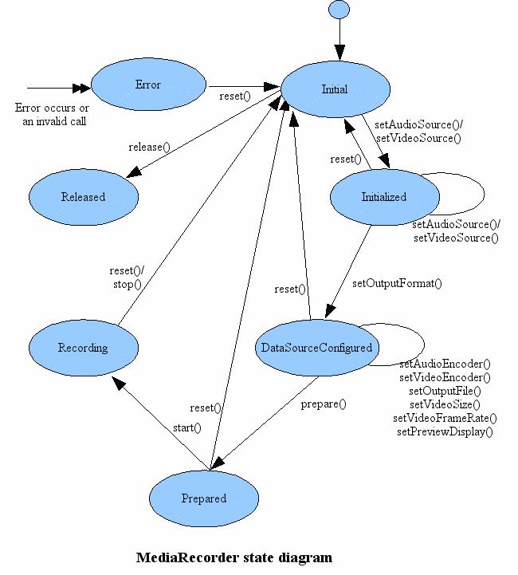

MediaRecorder使用
MediaRecorder 说明
MediaRecorder 用于录制音频和视频。录制基于一种简单的状态机制（如图所示）。

状态说明：
- Initial 初始化：MediaRecorder 被创建，并设置音频或视频的来源。
- Initialized 初始化完成：确定了音视频来源，并可以设置输出格式、编码等。
- DataSourceConfigured 设置数据源配置：根据输出格式，配置一些编码、大小、帧率等属性。
- Prepared 准备：配置完成，准备录制。
- Recording 录制：录制中。
- Release 释放资源：音视频资源释放。
- Error 错误：录制中发生错误。
MediaRecorder 创建和示例
默认构造函数：MediaRecorder)()
利用手机本身的 camera 预览视频并录制音视频
开启摄像头和预览界面
1234567891011121314151617181920212223242526272829private void openCamera() {try {mCamera = Camera.open();if (mCamera == null) {return;}// camera 参数配置initCameraParams();mCamera.setDisplayOrientation(90);mCamera.setPreviewDisplay(mSurfaceHolder);mCamera.startPreview();} catch (IOException e) {e.printStackTrace();freeCameraResource();}}/*** 初始化 camera 参数*/private void initCameraParams() {CamcorderProfile mProfile = CamcorderProfile.get(CamcorderProfile.QUALITY_1080P);Camera.Parameters parameters = mCamera.getParameters();// 预览大小 parameters.setPreviewSize(mProfile.videoFrameWidth, mProfile.videoFrameHeight);parameters.setPictureSize(mProfile.videoFrameWidth, mProfile.videoFrameHeight);//预览格式parameters.setPictureFormat(ImageFormat.NV21);mCamera.setParameters(parameters);}开始录制音视频
123456789101112131415161718192021222324252627282930313233343536373839404142434445464748495051/****@author : Atu*@description :*create at: 2018/3/23 下午3:15*/private void startAVideoRecord() {try {if (mMediaRecorder == null) {//创建 MediaRecorder 实例mMediaRecorder = new MediaRecorder();//设置错误监听mMediaRecorder.setOnErrorListener(this);} else {//重置 MediaRecorder 到空闲状态mMediaRecorder.reset();}//设置摄像头解锁，用于录制视频mCamera.unlock();//MediaRecorder 添加 cameramMediaRecorder.setCamera(mCamera);//设置Surface以显示录制媒体（视频）的预览mMediaRecorder.setPreviewDisplay(mSurfaceHolder.getSurface());//设置视频源 mMediaRecorder.setVideoSource(MediaRecorder.VideoSource.CAMERA);//设置音频源 mMediaRecorder.setAudioSource(MediaRecorder.AudioSource.MIC);//设置视频输出的格式和编码mMediaRecorder.setOutputFormat(MediaRecorder.OutputFormat.MPEG_4);CamcorderProfile mProfile = CamcorderProfile.get(CamcorderProfile.QUALITY_480P);//设置视频大小尺寸mMediaRecorder.setVideoSize(mProfile.videoFrameWidth, mProfile.videoFrameHeight);//设置视频编码比特率mMediaRecorder.setAudioEncodingBitRate(44100);if (mProfile.videoBitRate > 2 * 1024 * 1024) {mMediaRecorder.setVideoEncodingBitRate(2 * 1024 * 1024);} else {mMediaRecorder.setVideoEncodingBitRate(mProfile.videoBitRate);}//设置视频帧率 mMediaRecorder.setVideoFrameRate(mProfile.videoFrameRate);//设置音频编码方式 mMediaRecorder.setAudioEncoder(MediaRecorder.AudioEncoder.AAC);//设置视频编码方式mMediaRecorder.setVideoEncoder(MediaRecorder.VideoEncoder.H264);//设置视频方位mMediaRecorder.setOrientationHint(orientationHintDegrees);//设置录制输出位置mMediaRecorder.setOutputFile(mRecordFile.getAbsolutePath());//录制准备mMediaRecorder.prepare();//开始录制mMediaRecorder.start();} catch (IOException e) {e.printStackTrace();}}